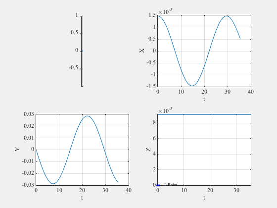
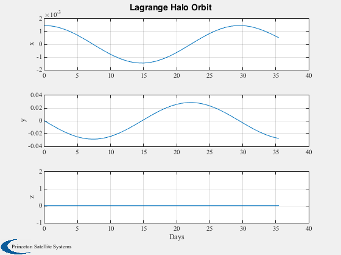
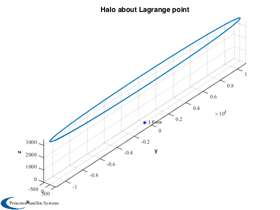
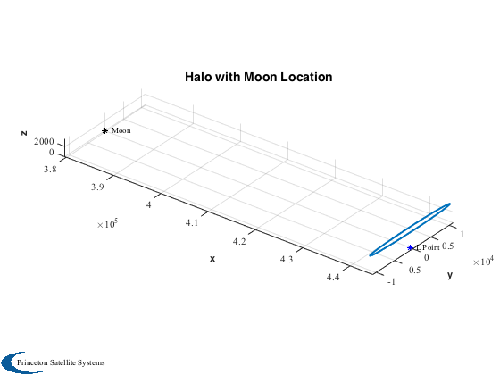
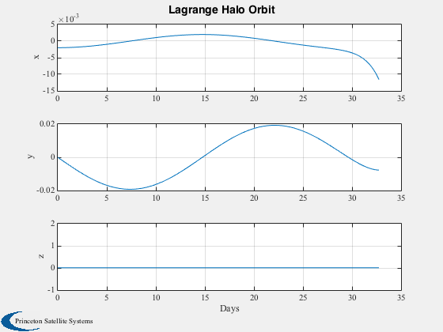
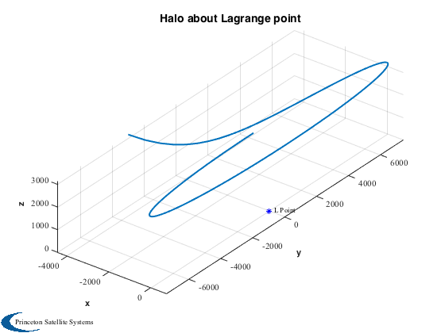
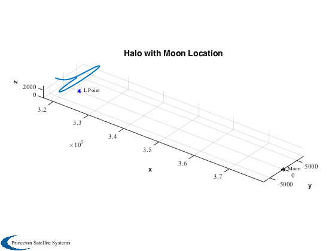

Simulate a sail halo about a Lunar Lagrange point. The orbit is unstable.
Uses the variational equations in the rotating frame.
Since version 7.
------------------------------------------------------------------------
Reference: Colin R. McInnes, "Solar Sailing: Technology, Dynamics and Mission
Applications", Springer Praxis, London, 1999
------------------------------------------------------------------------
See also LunarHalo, FRotatingLagrange., Constant, InformDlg, Plot2D,
Plot3D, PlotOrbitPage, Accel
------------------------------------------------------------------------
Contents
McInnes L2 point (outside Moon's orbit)
accel = 0.206*1e-6;
theta = atan(1/sqrt(2));
mu = 0.01215;
muE = Constant('mu earth');
muM = mu/(1-mu)*muE;
View ideal halo first
[r0,xL,wS,Omega,rMoon] = LunarHalo( accel, 2, theta, muM, muE );
opts = odeset('abstol',1e-12,'reltol',1e-8);
Initially sail attitude is fixed in rotating frame
vy = r0(2)*wS/rMoon/Omega;
x0 = [[r0(1);0;r0(3)]/rMoon;0;vy;0];
d.accel = accel/Omega^2/rMoon;
d.mu = mu;
d.wS = wS/Omega;
d.theta = theta;
d.xL = xL;
d.linear = 1;
d.r0 = r0/rMoon;
Integration
figureHandle = InformDlg( 'Integrating...', 'LunarHaloSim' );
[tOut,z] = ode113( @FRotatingLagrange, [0 1.3*2*pi], x0, opts, d );
close(figureHandle);
Plots
PlotOrbitPage( z(:,1:3)', tOut'/Omega/86400, 'Lagrange Halo Orbit' )
hold on
plot3(0,0,0,'b*')
text(xL,0,0,' L Point')
axis tight
Plot2D(tOut'/Omega/86400,z(:,1:3)','Days',{'x','y','z'},'Lagrange Halo Orbit')
Plot3D(z(:,1:3)'*rMoon,[],[],[],'Halo about Lagrange point')
hold on
plot3(0,0,0,'b*')
text(0,0,0,' L Point')
axis tight
Plot3D([z(:,1)'+xL;z(:,2:3)']*rMoon,[],[],[],'Halo with Moon Location')
hold on
plot3((1-mu)*rMoon,0,0,'k*')
text((1-mu)*rMoon,0,0,' Moon')
plot3(xL*rMoon,0,0,'b*')
text(xL*rMoon,0,0,' L Point')
axis tight
   
McInnes L1 point (inside Moon's orbit)
accel = 0.3*1e-6;
View ideal halo first
[r0,xL,wS,Omega,rMoon,U] = LunarHalo( accel, 1, theta, muM, muE );
Initially sail attitude is fixed in rotating frame
nOrb = 1.2;
t = linspace(0,nOrb*2*pi,100);
d.accel = accel/Omega^2/rMoon;
d.xL = xL;
vy = r0(2)*wS/rMoon/Omega;
x0 = [[r0(1);0;r0(3)]/rMoon;0;vy;0];
[tOut,z] = ode113( @FRotatingLagrange, t, x0, opts, d );
Plot2D(tOut'/Omega/86400,z(:,1:3)','Days',{'x','y','z'},'Lagrange Halo Orbit')
Plot3D(z(:,1:3)'*rMoon,[],[],[],'Halo about Lagrange point')
hold on
plot3(0,0,0,'b*')
text(0,0,0,' L Point')
axis tight
Plot3D([z(:,1)'+xL;z(:,2:3)']*rMoon,[],[],[],'Halo with Moon Location')
hold on
plot3((1-mu)*rMoon,0,0,'k*')
text((1-mu)*rMoon,0,0,' Moon')
plot3(xL*rMoon,0,0,'b*')
text(xL*rMoon,0,0,' L Point')
axis tight
  